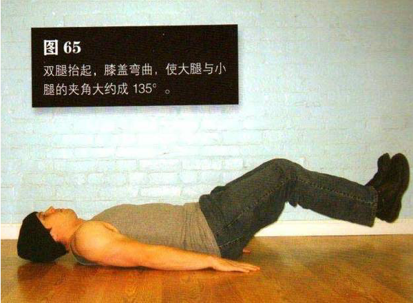
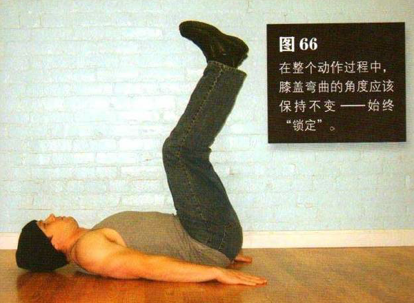

平躺在地上，双腿并拢伸展，双手置于身体两侧的地面上。双腿抬起，膝盖弯曲，使大腿与小腿的夹角大约成 135°双脚距离地面约 2 一5 厘米。这是该动作的起始姿势。
该练习前半部分的动作包括平缓地抬起双腿和双脚，持续大约 2 秒钟，直到双脚位于骨盆正上方（图 66）在整个动作过程中，膝盖弯曲的角度应该保持不变——始终“锁定”。双手向下按压地板，这样有助于保持身体稳定。两脚位于骨盆正上方时，略作停顿，然后进行反向动作。在回复到起始姿势时也略作停顿，然后重复以上过程。双脚向上运动时呼气，向下运动时吸气。在整组练习中，腹部始终都要收紧，双脚始终不能接触地面。
初级标准：1 组，10 次
中级标准：2 组，各 15 次
高级标准：3 组，各 30 次